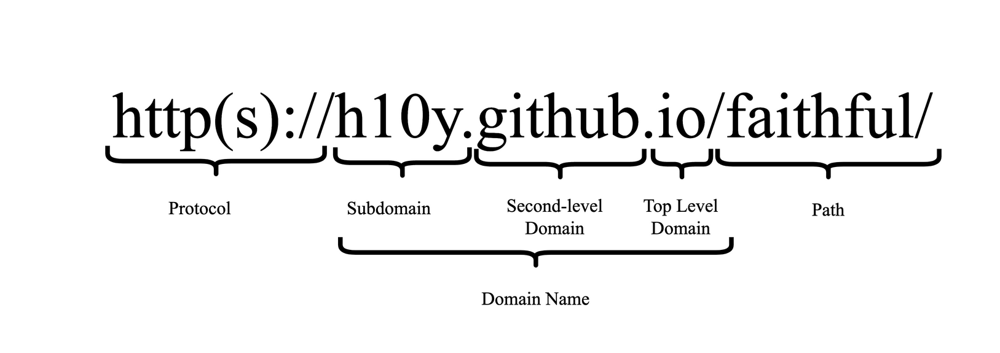
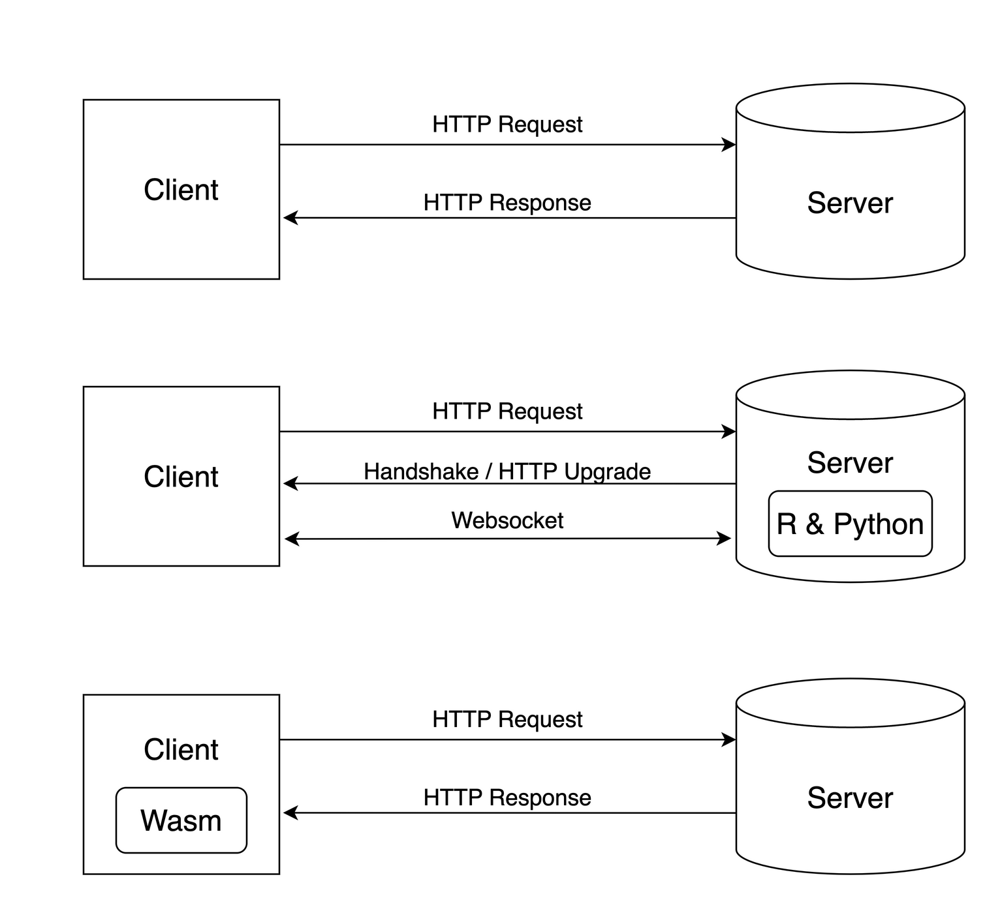
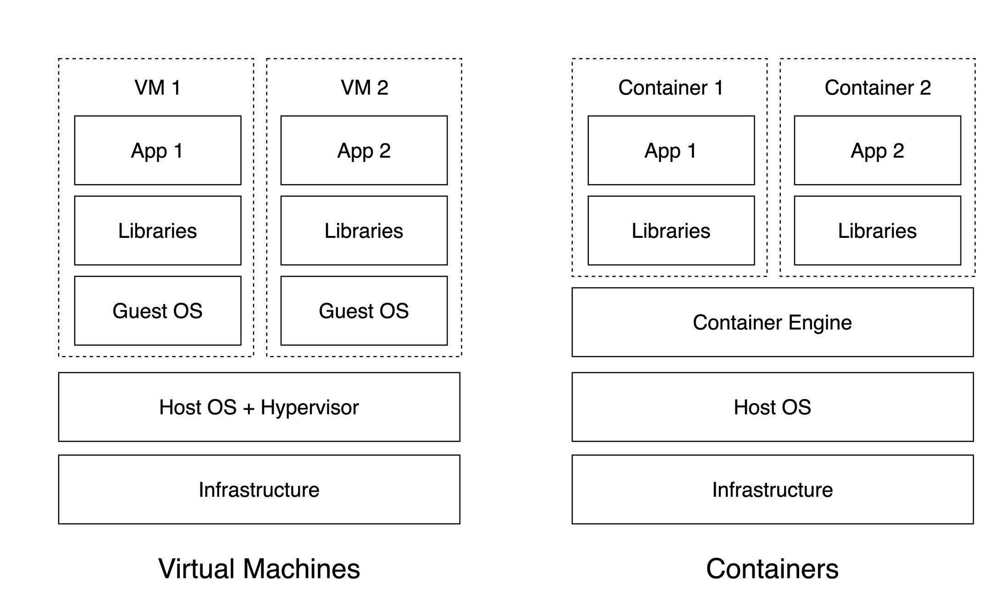

Chapter 2 Hosting Concepts
To better understand this book, you will need to first gain a general understanding about how web applications are hosted. This includes: domains and networking, website technologies, servers, and hosting environments. It is key to get a general grasp of these concepts as this is how your Shiny application will be shared and made accessible to others.
Imagine accessing a Shiny application on the Internet. At a high level, you visit the application by clicking a link or typing a URL in the browser. By visiting the application, the browser performs operations related to domains and networking to serve you the application. The application itself is run in the browser with website technologies. The actual data of the application is hosted on a server that has a hosting environment catered to the Shiny application.
Users accessing a Shiny application primarily remember only the website link, abstracting them from understanding the concepts needed for the application to run on the Internet. This chapter delves into how Shiny applications are hosted, using accessing a Shiny application as a motivating example.
By the end of this chapter, you should be able to grasp why an application might not be loading, or why it is taking longer than you have anticipated for the application to load.
2.1 Domains and Networking
To access a Shiny application, it begins with a URL, or universal resource locator, like: https://h10y.github.io/faithful/ as seen in Figure 2.1.

Figure 2.1: Breakdown of URL.
There is a lot to unpack with this URL. First, there is the protocol which is the https part. The protocol specifies how data will be transferred to you. If you use https, which is shorthand for “Hypertext Transfer Protocol Secure”, it means that you will transfer data securely with encryption. If you use http (Hypertext Transfer Protocol), it means that data will be transferred without any encryption. Transferring data with https is preferred as your web traffic is less likely to be intercepted and read during transfers.
Next is the domain name which is the h10y.github.io where h10y is the subdomain of github.io and github is the second-level domain of the top level domain (TLD) io. The domain name specifies where data will be transferred from. It is a reference to an Internet Protocol (IP) address that identifies a computer (server) that is available on the Internet. The domain lets your computer know which computer to request data from.
To know which domain name is linked to which IP address, the DNS (domain name system) is used. When you enter a URL into your browser, your browser makes a DNS query to resolve the domain to a corresponding IP address, allowing your computer to establish a connection to the appropriate server over the Internet. We talk more about DNS in Section 8.3.1.
Finally, there is the path part which is /faithful/. The path lets you specify what resource you want from the server.
Sometimes, you might see a URL like: https://h10y.github.io:443/faithful/ which is different from the previous URL we introduced (note the “:443”). This new part specifies a port. The port specifies the connection point of a server. There are common ports for different protocols. For example, for “https” it is usually 443. For “http”, it is usually 80.
The URL just specifies how a client connects to a server. The actual connection, requires networking between the client and server using TCP/IP (Transmission Control Protocol/Internet Protocol). TCP/IP is a suite of communication protocols to help computers connect with each other and forms a network of computers.
In the case of the Shiny application, a client computer (e.g. your laptop) would request data from a server computer and the server sends a response with the requested data. This data contains all the necessary information to serve your application. These request/response operations happen everyday on the Internet to provide access to applications like your Bank portal or social media app.
In this book, you will see the version 4 of the Internet Protocol addresses (IPv4) being used. IPv4 addresses can be recognized by a unique combination of numbers and periods, e.g. 192.168.0.1. Version (IPv6) addresses can be recognized by having sets of decimal and hexadecimal numbers separated by colons, e.g. 0000:0000:0000:0000:0000:ffff:c0a8:0001.
There are also a few special-purpose IP addresses that you’ll see mentioned in the book. The address 127.0.0.1, or the localhost, is a self-reference to the current device. The 0.0.0.0 address is used as an unspecified address and the server will listen to any address on any interface.
2.2 Website Technologies
The data that comes from a server is provided in a raw format that needs to be interpreted by a client (Fig. 2.2, top). Data is transferred with HTTP (Hypertext Transfer Protocol), creating a connection to the server for each data request. In the case of a Shiny application, the data provided is meant to be interpreted by a web browser that serves a website. A website uses many technologies to interpret which commonly includes: HTML (HyperText Markup Language), CSS (Cascading Style Sheets), and JavaScript.
Shiny applications use HTML, CSS, and JavaScript to render a web application. The HTML contains textual information about a website. While the CSS provides styling for a website. The JavaScript enables interactivity for a website by communicating with the Shiny application backend.
The Shiny application backend runs on either R or Python and creates the data needed to render the application on a web browser. A feature of Shiny is the use of websockets that enable the client computer to establish a two-way communication channel with the server. Websockets are beneficial as your application can simultaneously send and receive data by opening up a single continuous connection to the server. In comparison, HTTP requires multiple connections to send and receive data which reduces overhead traffic for transfers improving data transfer performance. Websockets are critical in providing the reactivity that make Shiny so well suited for data related applications (Fig. 2.2, middle).
A special flavour of Shiny, named Shinylive (Chapter 5.4) performs computations client side. This is made possible by running R or Python libraries, typically run by a backend server, entirely in your browser with WebAssembly (Wasm) (Fig. 2.2, bottom). Since there are no backend computations, Shinylive only requires no backend and only the static hosting of HTML files and related “assets”, which is how we usually refer to JavaScript, CSS, and other files such as images.

Figure 2.2: Web technologies from simple HTTP request/response (top), to Websocket connections (middle), and WebAssembly (Wasm) based applications (bottom).
2.3 Servers
A server is a computer that runs indefinitely, and is available to serve content to anybody that requests it. It is important to use a server as it provides dedicated resources independent of your own computer. This means that you don’t need to keep your own computer running continuously and hosting tasks won’t slow down your own computer.
As servers are another computer, it can be costly to run. Therefore server resources can be shared with other users through a virtual environment. A virtual environment is an isolated instance of a computer created by allocating hardware resources from a single physical server. By using a virtual environment, it allows the creation of a virtual private server (VPS) where a server’s resources can be allocated to be used exclusively by a user. A VPS is one of the most popular options to deploy an application on a cloud provider that offers computing services without needing hardware physically present on-premise. In the end, when hosting a Shiny application, there is no difference when deploying an application to a VPS or physical on-premise server.
Servers can be offered as either as a IaaS (infrastructure as a service) or PaaS (platform as a service). IaaS provides access to a server without any support. It requires configuration and some server administration knowledge. For example, a common IaaS provider is AWS EC2 which provides you a VPS without any services. That means you will have to configure your own networking and resource management during the deployment of your application.
In comparison, PaaS usually abstracts direct access to the server by offering tools to help host and manage your application on a platform. For example, shinyapps.io enables you to deploy your Shiny application by running a command in the commandline for Python or clicking a button in RStudio for R. You do not have to worry about configuring networking to access your application or worry about how to run your application on a server.
Serving static files is much easier than serving dynamic applications like Shiny. Static files, as the name implies, will not change. Any modifications to the data is only made on the client side in memory. In contrast with this, dynamic applications require constant communication between the client and the server. As a result, hosting static files vs. dynamic apps will require different setups on the server side and will have different resources to effectively serve the users.
2.4 Hosting Environments
On servers that are meant to serve web applications, environments are specifically setup to help run web applications. An environment is a special setup on a server with the necessary dependencies and configurations to host your application. A lot of consideration of security, compatibility, and optimization goes into hosting environments to ensure that a web application runs as intended.
In terms of security, you must consider firewalls, how data is transmitted, and who can access your app. A firewall is a system that controls who can access your server. These considerations may not be known to the end user of your Shiny application, but it is important for you to be aware of when hosting a Shiny application.
In terms of compatibility, virtualization and containers can help make your applications run on any platform. Virtualization refers to allocation of hardware resources as virtualized hardware to create an isolated environment. A container also creates an isolated environment, but without the virtualized hardware. In other words, virtualization emulates the hardware, whereas a container directly accesses the hardware. Without isolated environments, you might spend a lot of time installing the right software to run your Shiny application. This also helps make your application scalable by being able to easily deploy on multiple instances of a platform.
In terms of optimization, you must consider how to route your traffic to ensure that your app runs smoothly. Many times, there might be high demand for your application. This is where multiple instances of your Shiny application might come in handy, where you are able to distribute the requests for your application.
You will see a considerable portion of this book devoted to containers and the description of container-based hosting options for Shiny apps. Containers bundle their own software, libraries and configuration files and are isolated from one another as shown in Figure 2.3 that shows how hardware level virtualization (VMs) and containers relate to each other at a high level.

Figure 2.3: Virtual machines (VMs) virtualize environments at the hardware level while containers create virtualized environments at the software level.
2.5 Summary
In this chapter, we have covered the basic concepts needed for understanding the subsequent sections. In short, we have explained at a high level what goes into hosting a Shiny application and how it is served over the Internet.
In the next chapters, you will learn more details about how hosting a Shiny application including more advanced concepts such as:
- Creating a virtual environment for your Shiny application with a container
- Where to host your Shiny Application in the Cloud
- Considerations for making your Shiny Application production ready